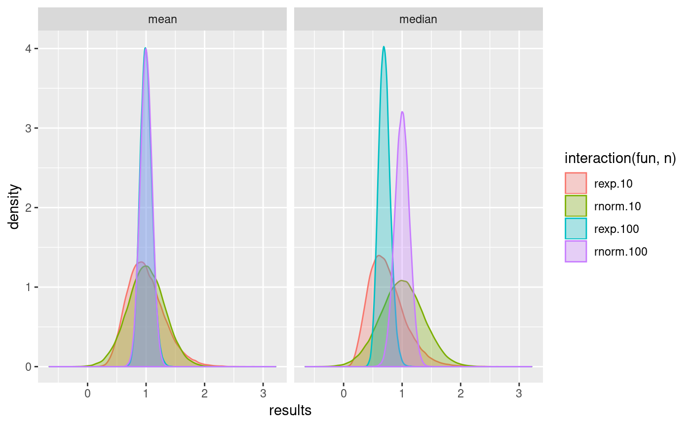
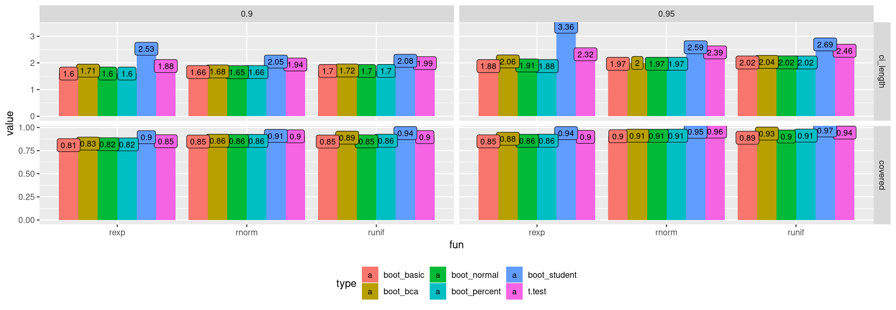

vignettes/simTool.Rmd
simTool.RmdregData <- function(n, SD) {
x <- seq(0, 1, length = n)
y <- 10 + 2 * x + rnorm(n, sd = SD)
tibble(x = x, y = y)
}
eval_tibbles(
expand_tibble(fun = "regData", n = 5L, SD = 1:2),
expand_tibble(proc = "lm", formula = c("y~x", "y~I(x^2)")),
post_analyze = broom::tidy,
summary_fun = list(mean = mean, sd = sd),
group_for_summary = "term",
replications = 3
)# A tibble: 16 x 12
fun n SD replications summary_fun proc formula term estimate std.error statistic
<chr> <int> <int> <int> <chr> <chr> <chr> <chr> <dbl> <dbl> <dbl>
1 regD… 5 1 1 mean lm y~x (Int… 10.1 0.692 16.5
2 regD… 5 1 1 mean lm y~x x 2.92 1.13 3.59
3 regD… 5 1 1 mean lm y~I(x^… (Int… 10.5 0.544 20.2
4 regD… 5 1 1 mean lm y~I(x^… I(x^… 2.71 1.04 3.20
5 regD… 5 1 1 sd lm y~x (Int… 1.45 0.288 6.89
6 regD… 5 1 1 sd lm y~x x 1.84 0.471 3.71
7 regD… 5 1 1 sd lm y~I(x^… (Int… 1.32 0.185 4.38
8 regD… 5 1 1 sd lm y~I(x^… I(x^… 2.15 0.352 2.62
9 regD… 5 2 1 mean lm y~x (Int… 9.86 1.26 7.85
10 regD… 5 2 1 mean lm y~x x 3.42 2.05 1.66
11 regD… 5 2 1 mean lm y~I(x^… (Int… 10.6 1.18 8.99
12 regD… 5 2 1 mean lm y~I(x^… I(x^… 2.65 2.24 1.17
13 regD… 5 2 1 sd lm y~x (Int… 0.209 0.0374 0.393
14 regD… 5 2 1 sd lm y~x x 1.17 0.0610 0.515
15 regD… 5 2 1 sd lm y~I(x^… (Int… 0.128 0.0488 0.436
16 regD… 5 2 1 sd lm y~I(x^… I(x^… 1.32 0.0927 0.542
# … with 1 more variable: p.value <dbl>
Number of data generating functions: 2
Number of analyzing procedures: 2
Number of replications: 3
Estimated replications per hour: 113037
Start of the simulation: 2019-02-02 00:50:09
End of the simulation: 2019-02-02 00:50:09The purpose of the simTool package is to disengage the research from any kind of administrative source code which is usually an annoying necessity of a simulation study.
This vignette will give an introduction into the simTool package mainly by examples of growing complexity. The workhorse is the function eval_tibbles. Every parameter of this function will be discussed briefly and the functionality is illustrated by at least one example.
The workflow is quite easy and natural. One defines two data.frames (or tibbles), the first one represents the functions that generate the data sets and the second one represents the functions that analyze the data. These two data.frames are passed to eval_tibbles which conducts the simulation. Afterwards, the results can nicely be displayed as a data.frame.
There are 3 rules:
The function expand_tibble is a convenient function for defining such data.frames.
We now define the data generation functions for our first simulation.
print(dg <- dplyr::bind_rows(
expand_tibble(fun = "rexp", n = c(10L, 20L), rate = 1:2),
expand_tibble(fun = "rnorm", n = c(10L, 20L), mean = 1:2)
))# A tibble: 8 x 4
fun n rate mean
<chr> <int> <int> <int>
1 rexp 10 1 NA
2 rexp 20 1 NA
3 rexp 10 2 NA
4 rexp 20 2 NA
5 rnorm 10 NA 1
6 rnorm 20 NA 1
7 rnorm 10 NA 2
8 rnorm 20 NA 2This data.frame represents 8 R-functions. For instance, the second row represents a function that generates 20 exponential distributed random variables with rate 1. Since mean=NA in the second row, this parameter is not passed to rexp.
Similar, we define the data.frame for data analyzing functions.
print(pg <- dplyr::bind_rows(
expand_tibble(proc = "min"),
expand_tibble(proc = "mean", trim = c(0.1, 0.2))
))# A tibble: 3 x 2
proc trim
<chr> <dbl>
1 min NA
2 mean 0.1
3 mean 0.2Hence, this data.frame represents 3 R-functions i.e. calculating the minimum and the arithmetic mean with trim=0.1 and trim=0.2.
The workhorse eval_tibbles has the following simplified pseudo code:
1. convert dg to R-functions {g_1, ..., g_k}
2. convert pg to R-functions {f_1, ..., f_L}
3. initialize result object
4. append dg and pg to the result object
5. t1 = current.time()
6. for g in {g_1, ..., g_k}
7. for r in 1:replications (optionally in a parallel manner)
8. data = g()
9. for f in {f_1, \ldots, f_L}
10. append f(data) to the result object (optionally apply a post-analyze-function)
11. optionally append data to the result object
12. optionally summarize the result object over all
replications but separately for f_1, ..., f_L (and optional group variables)
13. t2 = current.time()
14. Estimate the number of replications per hour from t1 and t2 The object returned by eval_tibbles is a list of class eval_tibbles.
dg <- expand_tibble(fun = "rnorm", n = 10, mean = 1:2)
pg <- expand_tibble(proc = "min")
eg <- eval_tibbles(data_grid = dg, proc_grid = pg, replications = 2)
eg# A tibble: 4 x 6
fun n mean replications proc results
<chr> <dbl> <int> <int> <chr> <dbl>
1 rnorm 10 1 1 min -1.75
2 rnorm 10 1 2 min -0.212
3 rnorm 10 2 1 min 0.232
4 rnorm 10 2 2 min 1.16
Number of data generating functions: 2
Number of analyzing procedures: 1
Number of replications: 2
Estimated replications per hour: 59681796
Start of the simulation: 2019-02-02 00:50:09
End of the simulation: 2019-02-02 00:50:09As you can see, the function always estimates the number of replications that can be done in one hour.
Of course, this parameter controls the number of replications conducted.
# A tibble: 6 x 6
fun n mean replications proc results
<chr> <dbl> <int> <int> <chr> <dbl>
1 rnorm 10 1 1 min -1.30
2 rnorm 10 1 2 min -0.574
3 rnorm 10 1 3 min 0.503
4 rnorm 10 2 1 min 0.729
5 rnorm 10 2 2 min 1.06
6 rnorm 10 2 3 min -0.272
Number of data generating functions: 2
Number of analyzing procedures: 1
Number of replications: 3
Estimated replications per hour: 70778880
Start of the simulation: 2019-02-02 00:50:09
End of the simulation: 2019-02-02 00:50:09eval_tibbles saves ALL generated data sets.
# A tibble: 2 x 6
fun n mean replications proc results
<chr> <dbl> <int> <int> <chr> <dbl>
1 rnorm 10 1 1 min -0.554
2 rnorm 10 2 1 min 0.00499[[1]]
[1] 1.04382239 -0.02157836 1.79342772 1.50162446 -0.55447035 1.88349784 0.79223220 2.83137401
[9] 1.17726438 0.19415935
[[2]]
[1] 3.947932470 2.121197052 1.645050873 3.052866250 3.163113962 1.201167182 2.775455294 0.004992648
[9] 1.649437807 2.380864742In general, it is sometimes very handy to have the data sets in order to investigate unusual or unexpected results. But saving the generated data sets can be very memory consuming. Stop saving the generated data sets can be obtained by setting discardGeneratedData = TRUE. See command line 11 in the pseudo code.
As stated in command line 12 we can summarize the result objects over all replications but separately for all data analyzing functions.
dg <- expand_tibble(fun = "runif", n = c(10, 20, 30))
pg <- expand_tibble(proc = c("min", "max"))
eval_tibbles(
data_grid = dg, proc_grid = pg, replications = 1000,
summary_fun = list(mean = mean)
)# A tibble: 6 x 6
fun n replications summary_fun proc value
<chr> <dbl> <int> <chr> <chr> <dbl>
1 runif 10 1 mean min 0.0904
2 runif 10 1 mean max 0.910
3 runif 20 1 mean min 0.0486
4 runif 20 1 mean max 0.953
5 runif 30 1 mean min 0.0314
6 runif 30 1 mean max 0.967
Number of data generating functions: 3
Number of analyzing procedures: 2
Number of replications: 1000
Estimated replications per hour: 35296923
Start of the simulation: 2019-02-02 00:50:10
End of the simulation: 2019-02-02 00:50:10eval_tibbles(
data_grid = dg, proc_grid = pg, replications = 1000,
summary_fun = list(mean = mean, sd = sd)
)# A tibble: 12 x 6
fun n replications summary_fun proc value
<chr> <dbl> <int> <chr> <chr> <dbl>
1 runif 10 1 mean min 0.0930
2 runif 10 1 mean max 0.907
3 runif 10 1 sd min 0.0865
4 runif 10 1 sd max 0.0860
5 runif 20 1 mean min 0.0463
6 runif 20 1 mean max 0.952
7 runif 20 1 sd min 0.0425
8 runif 20 1 sd max 0.0468
9 runif 30 1 mean min 0.0325
10 runif 30 1 mean max 0.966
11 runif 30 1 sd min 0.0323
12 runif 30 1 sd max 0.0311
Number of data generating functions: 3
Number of analyzing procedures: 2
Number of replications: 1000
Estimated replications per hour: 32334141
Start of the simulation: 2019-02-02 00:50:10
End of the simulation: 2019-02-02 00:50:10Note, by specifying the parameter summary_fun the generated data sets and all individual result objects are discarded. In this example we discard \(3 \times 1000\) data sets and \(3 \times 1000 \times 2\) individual result objects.
Sometimes the analyzing functions return quite complicated objects like in the Section A first example.
eval_tibbles(
expand_tibble(fun = "regData", n = 5L, SD = 1:2),
expand_tibble(proc = "lm", formula = c("y~x", "y~I(x^2)")),
replications = 2
)# A tibble: 8 x 7
fun n SD replications proc formula results
<chr> <int> <int> <int> <chr> <chr> <list>
1 regData 5 1 1 lm y~x <S3: lm>
2 regData 5 1 1 lm y~I(x^2) <S3: lm>
3 regData 5 1 2 lm y~x <S3: lm>
4 regData 5 1 2 lm y~I(x^2) <S3: lm>
5 regData 5 2 1 lm y~x <S3: lm>
6 regData 5 2 1 lm y~I(x^2) <S3: lm>
7 regData 5 2 2 lm y~x <S3: lm>
8 regData 5 2 2 lm y~I(x^2) <S3: lm>
Number of data generating functions: 2
Number of analyzing procedures: 2
Number of replications: 2
Estimated replications per hour: 815505
Start of the simulation: 2019-02-02 00:50:10
End of the simulation: 2019-02-02 00:50:10The parameter post_analyze (if specified) is applied directly after the result was generated (see command line 10). Note, purrr::compose can be very handy if your post-analyzing-function can be defined by a few single functions:
eval_tibbles(
expand_tibble(fun = "regData", n = 5L, SD = 1:2),
expand_tibble(proc = "lm", formula = c("y~x", "y~I(x^2)")),
post_analyze = purrr::compose(function(mat) mat["(Intercept)", "Estimate"], coef, summary.lm, identity),
replications = 2
)# A tibble: 8 x 7
fun n SD replications proc formula results
<chr> <int> <int> <int> <chr> <chr> <dbl>
1 regData 5 1 1 lm y~x 10.3
2 regData 5 1 1 lm y~I(x^2) 10.2
3 regData 5 1 2 lm y~x 9.43
4 regData 5 1 2 lm y~I(x^2) 9.95
5 regData 5 2 1 lm y~x 13.5
6 regData 5 2 1 lm y~I(x^2) 13.3
7 regData 5 2 2 lm y~x 9.27
8 regData 5 2 2 lm y~I(x^2) 9.25
Number of data generating functions: 2
Number of analyzing procedures: 2
Number of replications: 2
Estimated replications per hour: 472627
Start of the simulation: 2019-02-02 00:50:10
End of the simulation: 2019-02-02 00:50:10Note, the function identity used in compose and passed to the parameter post_analyze is only necessary because a bug was introduced in purrr 0.3.0, see https://github.com/tidyverse/purrr/issues/629. However, one can assume that this will be solved in a future version of purrr.
When the result object is a data.frame itself, for instance
presever_rownames <- function(mat) {
rn <- rownames(mat)
ret <- tibble::as_tibble(mat)
ret$term <- rn
ret
}
eval_tibbles(
expandGrid(fun = "regData", n = 5L, SD = 1:2),
expandGrid(proc = "lm", formula = c("y~x", "y~I(x^2)")),
post_analyze = purrr::compose(presever_rownames, coef, summary, identity),
replications = 3
)Warning in expandGrid(proc = "lm", formula = c("y~x", "y~I(x^2)")): The function expandGrid() is
deprecated. Please use expand_tibble() instead.Warning in expandGrid(fun = "regData", n = 5L, SD = 1:2): The function expandGrid() is deprecated.
Please use expand_tibble() instead.# A tibble: 24 x 11
fun n SD replications proc formula Estimate `Std. Error` `t value` `Pr(>|t|)` term
<chr> <int> <int> <int> <chr> <chr> <dbl> <dbl> <dbl> <dbl> <chr>
1 regDa… 5 1 1 lm y~x 9.91 0.670 14.8 0.000671 (Inter…
2 regDa… 5 1 1 lm y~x 2.80 1.09 2.56 0.0831 x
3 regDa… 5 1 1 lm y~I(x^2) 10.3 0.577 17.9 0.000381 (Inter…
4 regDa… 5 1 1 lm y~I(x^2) 2.63 1.10 2.40 0.0961 I(x^2)
5 regDa… 5 1 2 lm y~x 9.32 0.537 17.3 0.000419 (Inter…
6 regDa… 5 1 2 lm y~x 2.11 0.878 2.40 0.0960 x
7 regDa… 5 1 2 lm y~I(x^2) 9.78 0.590 16.6 0.000478 (Inter…
8 regDa… 5 1 2 lm y~I(x^2) 1.56 1.12 1.39 0.259 I(x^2)
9 regDa… 5 1 3 lm y~x 9.64 1.16 8.28 0.00369 (Inter…
10 regDa… 5 1 3 lm y~x 1.83 1.90 0.965 0.406 x
# … with 14 more rows
Number of data generating functions: 2
Number of analyzing procedures: 2
Number of replications: 3
Estimated replications per hour: 393120
Start of the simulation: 2019-02-02 00:50:10
End of the simulation: 2019-02-02 00:50:10In order to summarize the replications it is necessary to additional group the calculations with respect to another variable. This variable can be passed to group_for_summary
eval_tibbles(
expandGrid(fun = "regData", n = 5L, SD = 1:2),
expandGrid(proc = "lm", formula = c("y~x", "y~I(x^2)")),
post_analyze = purrr::compose(presever_rownames, coef, summary, identity),
summary_fun = list(mean = mean, sd = sd),
group_for_summary = "term",
replications = 3
)Warning in expandGrid(proc = "lm", formula = c("y~x", "y~I(x^2)")): The function expandGrid() is
deprecated. Please use expand_tibble() instead.Warning in expandGrid(fun = "regData", n = 5L, SD = 1:2): The function expandGrid() is deprecated.
Please use expand_tibble() instead.# A tibble: 16 x 12
fun n SD replications summary_fun proc formula term Estimate `Std. Error` `t value`
<chr> <int> <int> <int> <chr> <chr> <chr> <chr> <dbl> <dbl> <dbl>
1 regD… 5 1 1 mean lm y~x (Int… 9.95 0.500 53.5
2 regD… 5 1 1 mean lm y~x x 2.04 0.817 6.86
3 regD… 5 1 1 mean lm y~I(x^… (Int… 10.3 0.444 28.5
4 regD… 5 1 1 mean lm y~I(x^… I(x^… 1.93 0.845 2.80
5 regD… 5 1 1 sd lm y~x (Int… 0.505 0.404 66.9
6 regD… 5 1 1 sd lm y~x x 0.382 0.660 8.87
7 regD… 5 1 1 sd lm y~I(x^… (Int… 0.608 0.202 17.8
8 regD… 5 1 1 sd lm y~I(x^… I(x^… 0.759 0.385 1.87
9 regD… 5 2 1 mean lm y~x (Int… 9.38 0.787 13.6
10 regD… 5 2 1 mean lm y~x x 3.28 1.28 2.80
11 regD… 5 2 1 mean lm y~I(x^… (Int… 9.99 0.823 14.1
12 regD… 5 2 1 mean lm y~I(x^… I(x^… 2.74 1.57 1.79
13 regD… 5 2 1 sd lm y~x (Int… 1.06 0.271 7.18
14 regD… 5 2 1 sd lm y~x x 3.14 0.443 2.41
15 regD… 5 2 1 sd lm y~I(x^… (Int… 0.862 0.365 6.91
16 regD… 5 2 1 sd lm y~I(x^… I(x^… 2.74 0.694 1.73
# … with 1 more variable: `Pr(>|t|)` <dbl>
Number of data generating functions: 2
Number of analyzing procedures: 2
Number of replications: 3
Estimated replications per hour: 202851
Start of the simulation: 2019-02-02 00:50:11
End of the simulation: 2019-02-02 00:50:11By specifying ncpus larger than 1 a cluster objected is created for the user and passed to the parameter cluster discussed in the next section.
eval_tibbles(
data_grid = dg, proc_grid = pg, replications = 10,
ncpus = 2, summary_fun = list(mean = mean)
)# A tibble: 6 x 6
fun n replications summary_fun proc value
<chr> <dbl> <int> <chr> <chr> <dbl>
1 runif 10 1 mean min 0.0884
2 runif 10 1 mean max 0.912
3 runif 20 1 mean min 0.0656
4 runif 20 1 mean max 0.947
5 runif 30 1 mean min 0.0362
6 runif 30 1 mean max 0.969
Number of data generating functions: 3
Number of analyzing procedures: 2
Number of replications: 10
Estimated replications per hour: 84330
Start of the simulation: 2019-02-02 00:50:11
End of the simulation: 2019-02-02 00:50:12As it is stated in command line 7, the replications are parallelized. In our case, this means that roughly every CPU conducts 5 replications.
The parameter cluster_seed must be an integer vector of length 6 and serves the same purpose as the function set.seed. By default, cluster_seed equals rep(12345, 6). Note, in order to reproduce the simulation study it is also necessary that ncpus does not change.
The user can create a cluster on its own. This also enables the user to distribute the replications over different computers in a network.
library(parallel)
cl <- makeCluster(rep("localhost", 2), type = "PSOCK")
eval_tibbles(
data_grid = dg, proc_grid = pg, replications = 10,
cluster = cl, summary_fun = list(mean = mean)
)# A tibble: 6 x 6
fun n replications summary_fun proc value
<chr> <dbl> <int> <chr> <chr> <dbl>
1 runif 10 1 mean min 0.0884
2 runif 10 1 mean max 0.912
3 runif 20 1 mean min 0.0656
4 runif 20 1 mean max 0.947
5 runif 30 1 mean min 0.0362
6 runif 30 1 mean max 0.969
Number of data generating functions: 3
Number of analyzing procedures: 2
Number of replications: 10
Estimated replications per hour: 84275
Start of the simulation: 2019-02-02 00:50:12
End of the simulation: 2019-02-02 00:50:13As you can see our cluster consists of 3 workers. Hence, this reproduces the results from the last code chunk above. Further note, if the user starts the cluster, the user also has to stop the cluster. A cluster that is created within eval_tibbles by specifying ncpus is also stop within eval_tibbles.
A newly created cluster is ``empty’’. Hence, if the simulation study requires libraries or objects from the global environment, they must be transferred to the cluster.
Lets look at standard example from the boot package.
library(boot)
ratio <- function(d, w) sum(d$x * w) / sum(d$u * w)
city.boot <- boot(city, ratio,
R = 999, stype = "w",
sim = "ordinary"
)
boot.ci(city.boot,
conf = c(0.90, 0.95),
type = c("norm", "basic", "perc", "bca")
)BOOTSTRAP CONFIDENCE INTERVAL CALCULATIONS
Based on 999 bootstrap replicates
CALL :
boot.ci(boot.out = city.boot, conf = c(0.9, 0.95), type = c("norm",
"basic", "perc", "bca"))
Intervals :
Level Normal Basic
90% ( 1.145, 1.831 ) ( 1.106, 1.752 )
95% ( 1.079, 1.896 ) ( 0.966, 1.791 )
Level Percentile BCa
90% ( 1.289, 1.935 ) ( 1.289, 1.933 )
95% ( 1.250, 2.075 ) ( 1.250, 2.077 )
Calculations and Intervals on Original ScaleThe following data generating function is extremely boring because it always returns the data set city from the library boot.
returnCity <- function() {
city
}
bootConfInt <- function(data) {
city.boot <- boot(data, ratio,
R = 999, stype = "w",
sim = "ordinary"
)
boot.ci(city.boot,
conf = c(0.90, 0.95),
type = c("norm", "basic", "perc", "bca")
)
}The function ratio exists at the moment only in our global environment. Further we had to load the boot package. Hence, we load the boot package by setting cluster_libraries = c(“boot”) and transfer the function ratio by setting cluster_global_objects = c(“ratio”).
dg <- expand_tibble(fun = "returnCity")
pg <- expand_tibble(proc = "bootConfInt")
eval_tibbles(dg, pg,
replications = 10, ncpus = 2,
cluster_libraries = c("boot"),
cluster_global_objects = c("ratio")
)# A tibble: 10 x 4
fun replications proc results
<chr> <int> <chr> <list>
1 returnCity 1 bootConfInt <S3: bootci>
2 returnCity 2 bootConfInt <S3: bootci>
3 returnCity 3 bootConfInt <S3: bootci>
4 returnCity 4 bootConfInt <S3: bootci>
5 returnCity 5 bootConfInt <S3: bootci>
6 returnCity 6 bootConfInt <S3: bootci>
7 returnCity 7 bootConfInt <S3: bootci>
8 returnCity 8 bootConfInt <S3: bootci>
9 returnCity 9 bootConfInt <S3: bootci>
10 returnCity 10 bootConfInt <S3: bootci>
Number of data generating functions: 1
Number of analyzing procedures: 1
Number of replications: 10
Estimated replications per hour: 119766
Start of the simulation: 2019-02-02 00:50:13
End of the simulation: 2019-02-02 00:50:14Of course, it is possible to set cluster_global_objects=ls(), but then all objects from the global environment are transferred to all workers.
The function eval_tibbles generates in a first step function calls from data_grid and proc_grid. This is achieved by applying the R-function get. By default, envir=globalenv() and thus get searches the global environment of the current R session. An example shows how to use the parameter envir.
# masking summary from the base package
summary <- function(x) tibble(sd = sd(x))
g <- function(x) tibble(q0.1 = quantile(x, 0.1))
someFunc <- function() {
summary <- function(x) tibble(sd = sd(x), mean = mean(x))
dg <- expand_tibble(fun = "runif", n = 100)
pg <- expand_tibble(proc = c("summary", "g"))
# the standard is to use the global
# environment, hence summary defined outside
# of someFunc() will be used
print(eval_tibbles(dg, pg))
cat("--------------------------------------------------\n")
# will use the local defined summary, but g
# from the global environment, because
# g is not locally defined.
print(eval_tibbles(dg, pg, envir = environment()))
}
someFunc()# A tibble: 2 x 6
fun n replications proc sd q0.1
<chr> <dbl> <int> <chr> <dbl> <dbl>
1 runif 100 1 summary 0.287 NA
2 runif 100 1 g NA 0.151
Number of data generating functions: 1
Number of analyzing procedures: 2
Number of replications: 1
Estimated replications per hour: 2337383
Start of the simulation: 2019-02-02 00:50:14
End of the simulation: 2019-02-02 00:50:14
--------------------------------------------------
# A tibble: 2 x 7
fun n replications proc sd mean q0.1
<chr> <dbl> <int> <chr> <dbl> <dbl> <dbl>
1 runif 100 1 summary 0.276 0.513 NA
2 runif 100 1 g NA NA 0.126
Number of data generating functions: 1
Number of analyzing procedures: 2
Number of replications: 1
Estimated replications per hour: 2561841
Start of the simulation: 2019-02-02 00:50:14
End of the simulation: 2019-02-02 00:50:14Sometimes it is handy to access the parameter constellation that was used during the data generation in the (post) data analyzing phase. Of course, one could write wrapper functions for every data generating function and append the parameter constellation from the data generation as attributes to the data set, but the purpose of this package is to reduce such administrative source code. Hence if the (post) data analyzing function has an argument .truth, then eval_tibbles will manage that hand-over. A brief example should explain this. Suppose we want to estimate the bias of the empirical quantile estimator if the data is normal distributed.
dg <- expand_tibble(fun = c("rnorm"), mean = c(1,1000), sd = c(1,10), n = c(10L, 100L))
pg <- expand_tibble(proc = "quantile", probs = 0.975)
post_ana <- function(q_est, .truth){
tibble::tibble(bias = q_est - stats::qnorm(0.975, mean = .truth$mean, sd = .truth$sd))
}
eval_tibbles(dg, pg, replications = 10^3, discard_generated_data = TRUE,
ncpus = 2,
post_analyze = post_ana,
summary_fun = list(mean = mean))# A tibble: 8 x 9
fun mean sd n replications summary_fun proc probs bias
<chr> <dbl> <dbl> <int> <int> <chr> <chr> <dbl> <dbl>
1 rnorm 1 1 10 1 mean quantile 0.975 -0.573
2 rnorm 1000 1 10 1 mean quantile 0.975 -0.550
3 rnorm 1 10 10 1 mean quantile 0.975 -5.58
4 rnorm 1000 10 10 1 mean quantile 0.975 -5.34
5 rnorm 1 1 100 1 mean quantile 0.975 -0.0760
6 rnorm 1000 1 100 1 mean quantile 0.975 -0.0879
7 rnorm 1 10 100 1 mean quantile 0.975 -0.685
8 rnorm 1000 10 100 1 mean quantile 0.975 -0.695
Number of data generating functions: 8
Number of analyzing procedures: 1
Number of replications: 1000
Estimated replications per hour: 1084848
Start of the simulation: 2019-02-02 00:50:15
End of the simulation: 2019-02-02 00:50:18If we want to do the analysis for different distrubtions we could modify our post data analyzing function, but we can also simply add a .truth-column to the data generating grid. In this case, the information from the .truth-column is directly passed to the .truth-parameter:
dg <- dplyr::bind_rows(
expand_tibble(fun = c("rnorm"), mean = 0, n = c(10L, 100L), .truth = qnorm(0.975)),
expand_tibble(fun = c("rexp"), rate = 1, n = c(10L, 100L), .truth = qexp(0.975, rate = 1)),
expand_tibble(fun = c("runif"), max = 2, n = c(10L, 100L), .truth = qunif(0.975, max = 2))
)
pg <- expand_tibble(proc = "quantile", probs = 0.975)
post_ana <- function(q_est, .truth){
ret <- q_est - .truth
names(ret) <- "bias"
ret
}
eval_tibbles(dg, pg, replications = 10^3, discard_generated_data = TRUE,
ncpus = 2,
post_analyze = post_ana,
summary_fun = list(mean = mean))# A tibble: 6 x 11
fun mean n .truth rate max replications summary_fun proc probs bias
<chr> <dbl> <int> <dbl> <dbl> <dbl> <int> <chr> <chr> <dbl> <dbl>
1 rnorm 0 10 1.96 NA NA 1 mean quantile 0.975 -0.573
2 rnorm 0 100 1.96 NA NA 1 mean quantile 0.975 -0.0818
3 rexp NA 10 3.69 1 NA 1 mean quantile 0.975 -0.917
4 rexp NA 100 3.69 1 NA 1 mean quantile 0.975 -0.175
5 runif NA 10 1.95 NA 2 1 mean quantile 0.975 -0.174
6 runif NA 100 1.95 NA 2 1 mean quantile 0.975 -0.0183
Number of data generating functions: 6
Number of analyzing procedures: 1
Number of replications: 1000
Estimated replications per hour: 2908030
Start of the simulation: 2019-02-02 00:50:18
End of the simulation: 2019-02-02 00:50:20In the same fashion one could write a data analyzing function with a parameter .truth. To go even a step further, we store the analytic quantile function in the .truth column:
dg <- dplyr::bind_rows(
expand_tibble(fun = c("rnorm"), mean = 0, n = c(10L, 1000L),
.truth = list(function(prob) qnorm(prob, mean = 0))),
expand_tibble(fun = c("rexp"), rate = 1, n = c(10L, 1000L),
.truth = list(function(prob) qexp(prob, rate = 1))),
expand_tibble(fun = c("runif"), max = 2, n = c(10L, 1000L),
.truth = list(function(prob) qunif(prob, max = 2)))
)
bias_quantile <- function(x, prob, .truth) {
est <- quantile(x, probs = prob)
ret <- est - .truth[[1]](prob)
names(ret) <- "bias"
ret
}
pg <- expand_tibble(proc = "bias_quantile", prob = c(0.9, 0.975))
eval_tibbles(dg, pg, replications = 10^3, discard_generated_data = TRUE,
ncpus = 1,
summary_fun = list(mean = mean))# A tibble: 12 x 11
fun mean n .truth rate max replications summary_fun proc prob bias
<chr> <dbl> <int> <list> <dbl> <dbl> <int> <chr> <chr> <dbl> <dbl>
1 rnorm 0 10 <fn> NA NA 1 mean bias_quantile 0.9 -0.217
2 rnorm 0 10 <fn> NA NA 1 mean bias_quantile 0.975 -0.525
3 rnorm 0 1000 <fn> NA NA 1 mean bias_quantile 0.9 -0.00193
4 rnorm 0 1000 <fn> NA NA 1 mean bias_quantile 0.975 -0.00753
5 rexp NA 10 <fn> 1 NA 1 mean bias_quantile 0.9 -0.307
6 rexp NA 10 <fn> 1 NA 1 mean bias_quantile 0.975 -0.969
7 rexp NA 1000 <fn> 1 NA 1 mean bias_quantile 0.9 -0.00517
8 rexp NA 1000 <fn> 1 NA 1 mean bias_quantile 0.975 -0.0164
9 runif NA 10 <fn> NA 2 1 mean bias_quantile 0.9 -0.136
10 runif NA 10 <fn> NA 2 1 mean bias_quantile 0.975 -0.172
11 runif NA 1000 <fn> NA 2 1 mean bias_quantile 0.9 -0.00170
12 runif NA 1000 <fn> NA 2 1 mean bias_quantile 0.975 -0.00152
Number of data generating functions: 6
Number of analyzing procedures: 2
Number of replications: 1000
Estimated replications per hour: 1652212
Start of the simulation: 2019-02-02 00:50:20
End of the simulation: 2019-02-02 00:50:22But one should keep in mind that if one calculates the quantile during the (post) analyzing phase that this is happens on replication level. To be more precise lets look at an excerpt of the pseudo code from the beginning of the vignette:
6. for g in {g_1, ..., g_k}
7. for r in 1:replications (optionally in a parallel manner)
8. data = g()
9. for f in {f_1, \ldots, f_L}
10. append f(data) to the result object (optionally apply a post-analyze-function)No matter if one extend the data analyzing function f_1, … f_L or the post-analyze-function with an argument .truth the calculation are made for every single replication during step 10. Hence, the operations are not vectorized!
Note, the following code examples will use more computational resources. In order to prevent that these are checked/executed on the CRAN check farm, they are only evaluated if the environment variable NOT_CRAN is set to “true”
First we define how the data is generated, where the sample size should be 10 and 100:
dg <- dplyr::bind_rows(
expand_tibble(fun = c("rnorm"), mean = 1, n = c(10L, 100L)),
expand_tibble(fun = c("rexp"), rate = 1, n = c(10L, 100L))
)
dg# A tibble: 4 x 4
fun mean n rate
<chr> <dbl> <int> <dbl>
1 rnorm 1 10 NA
2 rnorm 1 100 NA
3 rexp NA 10 1
4 rexp NA 100 1Afterwards we define how we want to analyze the data:
# A tibble: 2 x 1
proc
<chr>
1 mean
2 medianFinally, we conduct the simulation and visualize the results
# A tibble: 800,000 x 7
fun mean n rate replications proc results
<chr> <dbl> <int> <dbl> <int> <chr> <dbl>
1 rnorm 1 10 NA 1 mean 0.616
2 rnorm 1 10 NA 1 median 0.463
3 rnorm 1 10 NA 2 mean 0.884
4 rnorm 1 10 NA 2 median 0.796
5 rnorm 1 10 NA 3 mean 1.36
6 rnorm 1 10 NA 3 median 1.08
7 rnorm 1 10 NA 4 mean 0.355
8 rnorm 1 10 NA 4 median 0.347
9 rnorm 1 10 NA 5 mean 0.514
10 rnorm 1 10 NA 5 median 0.414
# … with 799,990 more rows
Number of data generating functions: 4
Number of analyzing procedures: 2
Number of replications: 100000
Estimated replications per hour: 18869556
Start of the simulation: 2019-02-02 00:50:23
End of the simulation: 2019-02-02 00:50:42et$simulation %>%
ggplot(aes(x = results, color = interaction(fun, n), fill = interaction(fun, n))) +
geom_density(alpha = 0.3) +
facet_wrap(~ proc)
We want to compare the confidence intervals that are generated by boot::boot.ci() and stats::t.test(). Unfortunately, boot::boot.ci() cannot be applied directly to the generated data sets. Therefore, we write a new function:
bootstrap_ci <- function(x, conf.level, R = 999) {
b <- boot::boot(x, function(d, i) {
n <- length(i)
c(
mean = mean(d[i]),
variance = (n - 1) * var(d[i]) / n^2
)
}, R = R)
boot::boot.ci(b, conf = conf.level, type = "all")
}Furthermore, boot::boot.ci() returns in general more than one confidence interval and the structures returned by boot::boot.ci() and stats::t.test() are also very different. One solution could be to write a function t_test() that calls stats::t.test(), modifies the returned object and additionally modify the function bootstrap_ci so that both function return objects with a unified structure. But instead of that we will implement a function that is later on passed to the argument post_analyze of eval_tibbles:
post_analyze <- function(o, .truth) {
if (class(o) == "htest") {
#post-process the object returned by t.test
ci <- o$conf.int
return(tibble::tibble(
type = "t.test",
aspect = c("covered", "ci_length"),
value = c(ci[1] <= .truth && .truth <= ci[2], ci[2] - ci[1])
))
} else if (class(o) == "bootci") {
#post-process the object returned by boot.ci
method = c("normal", "basic", "student", "percent", "bca")
ret = o[method]
lower = unlist(purrr::map(ret, ~dplyr::nth(.x, -2)))
upper = sapply(ret, dplyr::last)
type = paste("boot", method, sep = "_")
return(
dplyr::bind_rows(
tibble::tibble(
type = type,
aspect = "covered",
value = as.integer(lower <= .truth & .truth <= upper)),
tibble::tibble(
type = type,
aspect = "ci_length",
value = upper - lower))
)
}
}As you can see, the objects returned are tibbles with more than one row. Summarizing the data over all replications will in general use the variable type and aspect as grouping variables. This can be achieved by using the parameter group_for_summary of eval_tibbles.
We want to generate normal-, uniform-, and exponential distributed data:
dg <- dplyr::bind_rows(
simTool::expand_tibble(fun = "rnorm", n = 10L, mean = 0, sd = sqrt(3), .truth = 0),
simTool::expand_tibble(fun = "runif", n = 10L, max = 6, .truth = 3),
simTool::expand_tibble(fun = "rexp", n = 10L, rate = 1 / sqrt(3), .truth = sqrt(3))
)
dg# A tibble: 3 x 7
fun n mean sd .truth max rate
<chr> <int> <dbl> <dbl> <dbl> <dbl> <dbl>
1 rnorm 10 0 1.73 0 NA NA
2 runif 10 NA NA 3 6 NA
3 rexp 10 NA NA 1.73 NA 0.577and apply our functions that calculate the confidence intervals to it using two different confidence levels.
# A tibble: 4 x 2
proc conf.level
<chr> <dbl>
1 t.test 0.9
2 bootstrap_ci 0.9
3 t.test 0.95
4 bootstrap_ci 0.95Note, that the structure of the objects returned are quite different which addressed by our function post_analyze. The variables type and aspect that are created by post_analyze are to distinguish the different confidence intervals. Since these variables are part of the result objects, eval_tibbles assumes that these variables are results. In order to summarize the results (calculating the mean) over all replications correctly we need to tell eval_tibbles that additional group variables are type and aspect:
et <- eval_tibbles(dg, pg,
replications = 10^3, ncpus = 2,
cluster_global_objects = "post_analyze",
post_analyze = post_analyze,
summary_fun = list(mean = mean),
group_for_summary = c("aspect", "type")
)
et# A tibble: 72 x 14
fun n mean sd .truth max rate replications summary_fun proc conf.level aspect type
<chr> <int> <dbl> <dbl> <dbl> <dbl> <dbl> <int> <chr> <chr> <dbl> <chr> <chr>
1 rnorm 10 0 1.73 0 NA NA 1 mean t.te… 0.9 ci_le… t.te…
2 rnorm 10 0 1.73 0 NA NA 1 mean t.te… 0.9 cover… t.te…
3 rnorm 10 0 1.73 0 NA NA 1 mean boot… 0.9 ci_le… boot…
4 rnorm 10 0 1.73 0 NA NA 1 mean boot… 0.9 ci_le… boot…
5 rnorm 10 0 1.73 0 NA NA 1 mean boot… 0.9 ci_le… boot…
6 rnorm 10 0 1.73 0 NA NA 1 mean boot… 0.9 ci_le… boot…
7 rnorm 10 0 1.73 0 NA NA 1 mean boot… 0.9 ci_le… boot…
8 rnorm 10 0 1.73 0 NA NA 1 mean boot… 0.9 cover… boot…
9 rnorm 10 0 1.73 0 NA NA 1 mean boot… 0.9 cover… boot…
10 rnorm 10 0 1.73 0 NA NA 1 mean boot… 0.9 cover… boot…
# … with 62 more rows, and 1 more variable: value <dbl>
Number of data generating functions: 3
Number of analyzing procedures: 4
Number of replications: 1000
Estimated replications per hour: 15642
Start of the simulation: 2019-02-02 00:50:48
End of the simulation: 2019-02-02 00:54:38Finally, we can visualize the summarized results:
et$simulation %>%
ggplot(aes(x = fun, y = value, group = type, fill = type, label = round(value, 2))) +
geom_col(position = "dodge") +
geom_label(position = position_dodge(0.9), size = 3) +
theme(legend.position = "bottom") +
facet_grid(aspect ~ conf.level, scales = "free")
Here we briefly realize the simulation differently by leveraging data analyzing functions with unified return-objects:
t_test = function(x, conf.level){
tt <- t.test(x, conf.level = conf.level)
# unify return
tibble::tibble(type = "t.test", lower = tt$conf.int[1], upper = tt$conf.int[2])
}
bootstrap_ci <- function(x, conf.level, R = 999) {
b <- boot::boot(x, function(d, i) {
n <- length(i)
c(
mean = mean(d[i]),
variance = (n - 1) * var(d[i]) / n^2
)
}, R = R)
ci <- boot::boot.ci(b, conf = conf.level, type = "all")
method = c("normal", "basic", "student", "percent", "bca")
ret = ci[method]
lower = unlist(purrr::map(ret, ~dplyr::nth(.x, -2)))
upper = sapply(ret, dplyr::last)
type = paste("boot", method, sep = "_")
# unify return
tibble::tibble(type = type, lower = lower, upper = upper)
}
dg <- dplyr::bind_rows(
simTool::expand_tibble(fun = "rnorm", n = 10L, mean = 0, sd = sqrt(3), .truth = 0),
simTool::expand_tibble(fun = "runif", n = 10L, max = 6, .truth = 3),
simTool::expand_tibble(fun = "rexp", n = 10L, rate = 1 / sqrt(3), .truth = sqrt(3))
)
pg <- simTool::expand_tibble(
proc = c("t_test","bootstrap_ci"),
conf.level = c(0.9, 0.95)
) %>%
mutate(R = ifelse(proc == "bootstrap_ci", 100, NA))
et <- eval_tibbles(dg, pg,
replications = 10^2, ncpus = 2
)
et# A tibble: 3,600 x 14
fun n mean sd .truth max rate replications proc conf.level R type lower
<chr> <int> <dbl> <dbl> <dbl> <dbl> <dbl> <int> <chr> <dbl> <dbl> <chr> <dbl>
1 rnorm 10 0 1.73 0 NA NA 1 t_te… 0.9 NA t.te… -1.56
2 rnorm 10 0 1.73 0 NA NA 1 boot… 0.9 100 boot… -1.44
3 rnorm 10 0 1.73 0 NA NA 1 boot… 0.9 100 boot… -1.40
4 rnorm 10 0 1.73 0 NA NA 1 boot… 0.9 100 boot… -1.57
5 rnorm 10 0 1.73 0 NA NA 1 boot… 0.9 100 boot… -1.50
6 rnorm 10 0 1.73 0 NA NA 1 boot… 0.9 100 boot… -1.57
7 rnorm 10 0 1.73 0 NA NA 1 t_te… 0.95 NA t.te… -1.77
8 rnorm 10 0 1.73 0 NA NA 1 boot… 0.95 100 boot… -1.54
9 rnorm 10 0 1.73 0 NA NA 1 boot… 0.95 100 boot… -1.63
10 rnorm 10 0 1.73 0 NA NA 1 boot… 0.95 100 boot… -1.83
# … with 3,590 more rows, and 1 more variable: upper <dbl>
Number of data generating functions: 3
Number of analyzing procedures: 4
Number of replications: 100
Estimated replications per hour: 80735
Start of the simulation: 2019-02-02 00:54:40
End of the simulation: 2019-02-02 00:54:44grps <- et$simulation %>%
select(-replications) %>%
select(fun:type) %>%
names
et$simulation %>%
mutate(covered = lower <= .truth & .truth <= upper,
ci_length = upper - lower) %>%
group_by_(.dots = grps) %>%
summarise(coverage = mean(covered),
ci_length = mean(ci_length))# A tibble: 36 x 13
# Groups: fun, n, mean, sd, .truth, max, rate, proc, conf.level, R [?]
fun n mean sd .truth max rate proc conf.level R type coverage ci_length
<chr> <int> <dbl> <dbl> <dbl> <dbl> <dbl> <chr> <dbl> <dbl> <chr> <dbl> <dbl>
1 rexp 10 NA NA 1.73 NA 0.577 bootstra… 0.9 100 boot_ba… 0.76 1.54
2 rexp 10 NA NA 1.73 NA 0.577 bootstra… 0.9 100 boot_bca 0.85 1.65
3 rexp 10 NA NA 1.73 NA 0.577 bootstra… 0.9 100 boot_no… 0.79 1.51
4 rexp 10 NA NA 1.73 NA 0.577 bootstra… 0.9 100 boot_pe… 0.82 1.54
5 rexp 10 NA NA 1.73 NA 0.577 bootstra… 0.9 100 boot_st… 0.91 2.32
6 rexp 10 NA NA 1.73 NA 0.577 bootstra… 0.95 100 boot_ba… 0.86 1.87
7 rexp 10 NA NA 1.73 NA 0.577 bootstra… 0.95 100 boot_bca 0.88 1.97
8 rexp 10 NA NA 1.73 NA 0.577 bootstra… 0.95 100 boot_no… 0.87 1.83
9 rexp 10 NA NA 1.73 NA 0.577 bootstra… 0.95 100 boot_pe… 0.88 1.87
10 rexp 10 NA NA 1.73 NA 0.577 bootstra… 0.95 100 boot_st… 0.95 3.30
# … with 26 more rows